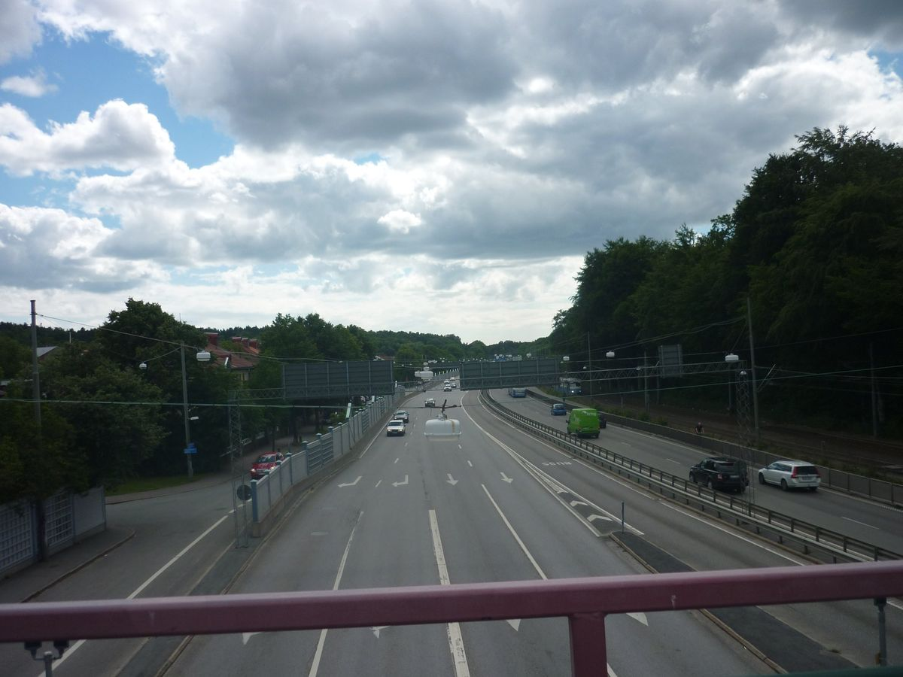

Tumbleweed Words
One piece of flash fiction or poetry.
Free, every week.
“Because our dads liked to get pissed up at the pub
and smash things when home.”
Free · Weekly · No spam · Unsubscribe any time
Two boys, a Mega Drive, and a walk home through tin town. Because our dads liked to get pissed up at the pub and smash things when home, there wasn’t much money left to go round.

I went over to Kennedy’s house after school to have dinner and play video games.
Virtual Racer had just been released on the Sega Mega Drive II and was considered the dogs bollocks. It was all the talk in classrooms that stank of body odour, flowery perfume and pickle onion crisps. On a back row, us lads would whisper best times to one another like love confessions. When the teacher’s back was turned, we talked about our moves through the gears. We called each other liars and said we’d do each other in if we didn’t get a loan of Virtual Racer. The game had 3D cars, well good racetracks and drivers that moved when you pressed buttons on the controller. It was an epic game. For once, people shared their dusty game cartridge for a couple of nights. Records needed to be broken. No one could believe how fast you could go on the racetrack.
I went to Kennedy’s house after school because our mum’s had bonded over dad’s who spent more time at the pub than at home. My dad was thin and Kennedy’s heavy. We learnt young the difference between spirits and pints through matchstick thin men with swollen red faces and men who looked well pregnant. When we went to top bench in the park on Friday nights to get on it, we would call a shot of vodka a Gabe, a can of Skol larger, a Steve. Bottles of cider and cans of gas, weed and bottles of 20/20, we didn’t have a name for any of that. It was all kicking off at top bench on Friday nights. School friends took forty-minute buses from the estates just to be a part of it. Sometimes you got a snog off girls. If the council estate girls turned up, you could get way more than wet lips, if you had a bit about you.
Because our dad’s liked to get pissed up at the pub and smash things when home, there wasn’t much money left to go round. Especially when they got let go from a factory that shut down and joined the dole queue with loads of other dads. The factory had made stands for high-end brands to place expensive bottles of perfumes on. This was funny to me. No one I knew ever bought the real deal first hand. You could get a counterfeit in town at the Sunday market under the bridge for a fiver.
All the lads I grew up with wore JOOP! HOMME perfume. A mate’s older brother with Liam Gallagher curtains promised me it got him at least sticky fingers whenever he went out on the town with the lads. I always thought it was because he drove a Nova Scotia 1.4 litre injection and had skunk weed, wore Jarvis Cocker NHS glasses. But I wasn’t about to argue with him about it. Heard he had a flick knife and wasn’t arsed about using it on any dickhead who wanted some.
Kennedy and my mum both worked double shifts at the local Co-op supermarket. A couple of mates with druggy parents never robbed it when mum was on duty. They said it was because we were mates. Those two always bummed smokes off me at lunch, did my head in. While my mum was on an evening shift scanning loafs of bread and pints of milk, tabloid newspapers and off brand vodka, I got to go round to Kennedy’s house for my tea and stay until her shift finished. We never did any homework at Kennedy’s. Not once. Every time I went round Trisha, his mum, would cook us something epic. It didn’t matter if I’d been over three nights in a row. Quality grub, every time, served up on a plate steaming hot. It was well good.
‘Love your mum’s cooking,’ I said, shovelling food into my mouth.
‘Must have hollow legs the way you go about the plate.’
‘You could do with a little less on yours.’
‘Don’t start. You know I put it on easy.’
‘Sorry, mate.’
‘Dick.’
Together, we would sit cross-legged on worn carpet and scoff down food. We looked like two buddha statues I once saw on the shelf at a friend’s house. He had stoner parents. They’d been to India on some sort of pilgrimage, come back with new words and long hair and books about bendy sex.
In a bedroom with posters of footy players and big-titty lingerie models cut out of catalogues, Kennedy and I played the only game that mattered: Virtual Racer. Our eyes fixated on a television screen that flickered occasionally from overheating. Clutching at controls the shape of samosas, thumbs and fingers frantically whacked away at buttons. It was intense, the way a dickhead from the estate would sometimes get in your face when off his tits intense. Every second matters when racing. Two cars zoomed round a track with well tight corners; you really felt the speed. The sounds were proper, too. What a rush.
‘Watch out for oil patches,’ Kennedy said.
‘There’s oil patches?’
‘Yeah, but you can’t always see them, just avoid the barriers.’
‘This game is well good.’
‘I know.’
On empty plates smears of garlic sauce and ketchup was the only evidence left of dinner. A classic Wednesday night meal: Chicken Kiev, chips and beans was scoffed down right after getting in and now we were gaming. I loved Kennedy’s place when his dad wasn’t in. We raced until Kennedy’s car spun out of control, giving me an easy win and him the hump. Big time. It was funny to watch him slam his controller against the carpet and wave fists about. I slowed down and parked at the finishing line for a second before crossing. His head was like a tomato. It was so funny.
‘Just cross the line, twatty-bollocks.’
‘You could still win.’
‘You know I can’t.’
I crossed the line and screamed yes! He punched the ground and yelled fuck! It was like his favourite football team had just scored an own goal. Kennedy’s always chill but when he lost a race, he really lost it for a split second. That’s how much the game meant to us then. It made a chill stoner go mental when they lost. An NPC stood waving a chequered white and black flag as you crossed the line. That was the only bit of the game I didn’t like. No matter the racetrack, it was the same ginger head holding a flag, every time. In real races you got curvy birds with nice boobs and bottles of bubbly.
‘That corner always messes me up,’ Kennedy said.
We placed our controllers on the ground, rubbed our fingers.
‘It was neck and neck until then,’ I said.
‘It’s my game and you always win.’
‘In Math class you spend all day staring at Jenny’s tits but get A’s.’
Kennedy smiled, his chubby pale cheeks turned salmon pink. ‘Can you imagine sucking on them bazookas?’ he said.
‘I bet you do more than imagine. I’ll never borrow a pair of socks from you.’
‘Or towel.’
‘You what? I used one last weekend after our kickabout.’
‘Crispy like fried chicken.’
I gave Kennedy a dig on the arm and was instantly put into a headlock. We rolled around on worn carpet attempting to outpower the other.
‘Watch the plates,’ Kennedy said, ‘mum will wreck me if I break one.’
‘Let me up,’ I said, ‘you haven’t showered since PE.’
‘I won’t be using Jenny towel when I do.’
‘Sick.’
I attempted to wrap my legs round his waist but was swiftly pinned to the ground. The smell of feet drowned my nostrils as a cheek rubbed against carpet covered in crumbs and clipped nails.
‘You need a girl.’
As usual, Kennedy found himself on top of me in complete control. A mixture of limb suffocation and weight on the spine did me in. After a couple of attempts to dig him in the ribs, I tapped out. There was no point, Kennedy had man strength. We both rose red faced from the floor, our garlic breath slapping the other in the cheek like a winter wind.
‘Ask her out,’ I said.
‘Pass us that bottle of coke.’
I passed him a bottle of warm coca cola and swallowed the dregs he offered me. Swear his spit was in it.
‘Ask her out.’ I wiped my mouth with the back of my hand. ‘You’ve been going on about her long enough, may as well.’
‘Yeah,’ Kennedy said. ‘But then I’d have to deal with the lads calling me a sellout for seeing a posh bird.’
‘So what? Better than you hammering your cock every night. They’ll be nothing left by the time you get a bird. She’ll probably say no anyway.’
Kennedy stroked his blond curtains back into place. I pulled my Umbro jumper down to my waist. Strands of curly hair poked out like daddy longlegs.
‘If she said no, it be worse. I’d never hear the end of it from Gaz.’
‘He’s been ripping into everyone lately.’
‘You hear what happened to his dad up on Gilford Estate?’
‘When the police came, he was off his head. Heard he smacked one of them.’
‘Won’t see him for a while.’
‘No excuse for Gaz knocking that year five about on the tennis courts though, he’s half his size.’
‘What did the year five do again?’ Kennedy asked.
‘Nothing.’ I replied.
‘Sounds about right for Gaz these days.’
A landline phone rang. A few minutes later Trisha yelled up the stairs it was time for me to go home. We both stood tall. I’m a few inches taller and this took the edge off being handled so easily by my best mate. Kennedy had the frame of a rugby player. I’m thin. We shared yellow nicotine stains on our fingers and hazel eyes. The green and brown of his eyes reminded me of falling leaves that are slippery to walk on in autumn. Deadly if you need to run home at night.
‘You good getting back?’ he asked.
I nodded.
Patting him on the shoulder, I pulled on a pair of knotted adidas trainers. Knots I’d made earlier when told off in PE by a teacher who looks like Santa Claus for being slow. I wasn’t slow, I needed a dump, he wouldn’t let me go toilet.
‘Meet at top bench in the morning and walk up to school together?’ Kennedy asked.
‘See you there after my paper round.’
‘Danny’s dog still attacking you?’
‘Dunno, been weeks since I went to his door.’
‘That thing needs putting down.’
‘Tell me about it.’
The walk home from Kennedy’s took fifteen minutes. Ten if you legged it. On midweek nights the village was quieter than on weekends. But there were obstacles to overcome. Tin Town, council houses full of smackheads, deadeyes who would sometimes appear like zombies on the street. I swear they foamed at the mouth. They would snatch at your chips or smoke or pocket if they got too close. That I do know. You didn’t want one of them touching you, let me tell you. Cars from rival towns and villages, packed full of older lads who wanted to kick someone in was an issue. A few nutters who’d got out from prison on tag that lived above the shops in a bedsit could kick off over nothing. I knew most of the faces, but sometimes that didn’t matter. It all depended. It depended if they were coming up or down or just getting out or going back in. If the missus had left them or a week’s dole money had been done on booze or drug or at the bookies, it didn’t matter if they knew your face or not. It was kicking off.
At least walking home was never boring. Sometimes you’d have a bit of banter with a drunk dad or bum a free smoke or be given a fiver from a mate’s big brother’s because he’d won on the scratch cards. Then you could buy yourself a four pack at the off license and go top bench with something. People could be well generous where I lived when they had something.
The off license was run by a Punjabi who wore a turban. Mr. Patel was either shit scared of us or didn’t know who should be drinking booze at what age. Every time we went in there, he sold us whatever we wanted. We liked Mr. Patel, proper sound. Always made sure I was respectful around him. Tried to go in when the shop was empty. Not that he cared, but the police used to give us a chase and knew my face. Didn’t want Mr Patel catching strays for my behaviour.
There was a Chinese takeaway in the village that did chicken and chips in curry sauce for four quid. Because I went to school with Mr and Mrs Chung’s son, they made sure to sort me out with a decent portion. Danny Chung was always getting a kicking until Kennedy and me had a word with the lads about it. I think his parents appreciated it. It wasn’t too bad in the village, but when autumn came things got dark earlier. Most people who didn’t have a job really struggled with that.
I made it through tin town, walked fast along a main road with no sideroads for at least three minutes. Then I passed the park. Glancing into the darkness, I could tell by the red glow from spliffs if anyone was about. They weren’t, which was good because you had to go over if you knew someone and they saw you. The shops were all closed. It was spitting rain. Pub doorways were empty of drunks stood smoking, which made getting wet feel well worth it. You can’t really do much as a teenager when a bunch of men come at you, especially if the lads aren’t about. I was just about at the Co-op to meet mum and walk home together when a voice called my name.
‘That you, Gabriel.’
I didn’t need to look over at the tin can shaped public toilet that leaned like that tower in Italy in an empty carpark. I knew who it was. Everyone knew Alec. The police, concerned parents, local nut jobs and young girls who would love to give it up to him for some free smoke, everyone. I kept my head down and kept moving forward.
‘Wee man, over here.’
His words always sounded aggressive. There was nothing I could do. I had to go over or face the consequences of pretending I hadn’t heard him, and you can fuck that right off. I’m not about to get done in for dissing Alec. I stopped, turned sharply, as though his words had just drifted with the wind and met my ear like a slap you get round the head off your mum for doing shit at school. Nodding, I forced a smile, moved with hands in pockets towards the dim glow of lamplight above the public toilet.
Alec stood at a metal door covered in graffiti. Holding it half open, dense plumes of smoke wafted out over his shoulder. It made it hard to see his high cheekbones, mental looking scars on his face the shape of rivers. His slick Elvis like ink black hair blended in well good with the sky. His black overcoat and denim jeans concealed a slender frame of muscle and thick bone. Alec didn’t look like much, but if you’ve seen his hands go to work on concrete or a man twice his size, you’d think about it ten times before starting something.
‘How’s it going,’ I said.
He nodded.
I had approached with purpose, not caution. If you acted soft around Alec, it pissed him off. He didn’t really like people fearing him, which is a joke really because he made everyone shit a brick when in his company. Alec smiled and sized me up. I stood tall, waited to see what he wanted to do with me. His eyes were blazing man, I swear he was on something heavy.
‘What you doing oot here on ya own?’ he asked.
‘Just heading home from a mate’s house. Got school tomorrow, teachers doing my head in.’
He nodded. Looked left and right. ‘Get in here.’
Fuck! I swear I screamed it so hard in my head, I thought my words would pop out like a fart. I followed him into the public toilet with the reluctance of a child being dragged to their bed. Locked the door when he told me to.
‘I told my mum—’ I stopped myself from saying it. ‘Everything good?’
Alec went over to the metal toilet. Bending over, he snorted a white line off it with a rolled up fifty. It was the first time I had seen a fifty-pound note. Then he stood up and spun round. His eyes were raging man; they looked like rings of fire. I stood there trying not to shit my pants.
‘You want a hit wee man?’
‘I’m good.’
‘Nah, you want a hit, wee man. Widnae say no to a free bump of speed, would ya, ya wee bass?’
Fuck! I was two minutes from my mum and didn’t want to do a line. I’d heard he did brown and coke and other shit. What was I getting? I considered where I was. The toilet walls were stained in piss. Anything plastic had been melted by a lighter or snapped by a steel toecap boot. The smell was rank, a mixture of vomit and shit. The door was locked. Alec’s left eye began to twitch, then his left leg. He pulled on a smoke and watched me intensely. It was like I was performing a dance or some shit. He blew smoke rings over my shoulder, perfectly formed circles that broke apart as they reached me. Alec radiated disorder; I’m not even joking. I stood in front of his thin violent frame, knowing he was about to lose patience, big time. I didn’t want any of that. There was no choice.
‘Go on then Alec, you twisted my arm.’
Alec flicked his cigarette over my shoulder. Hot ash spat against my neck. I grimaced. Clenched my cheeks with everything I had.
‘No one’s forcing you. I’m just trying to be a pal, ya kin?’
‘Oh no, course not, it’s just, I don’t have any money on me.’
Alec smiled, rubbed his stubble cheeks with fingers covered in blisters and burn marks, gave me a dig on the shoulder. Instantly my arm went numb.
‘I wouldn’t take money off you. Took this off some gob shite in town just noo.’
Mum was mega upset when I got home. I found her sat on my sofa bed with a glass of vodka. She dressed in a white nightie hugging her knees. She pulled on a rolled-up cigarette with one hand, did the glass of vodka with the other. She didn’t turn to see if it was me when I got in. Instead, she just sat staring at a patch of damp on the wall. It had grown a few inches in the last month and given us both a cough.
‘I waited twenty minutes for you,’ she said.
‘Sorry mum, time got away—’
‘I don’t know what you get up to out there when I’m at work, but it has to stop Gabriel.’
I didn’t know how to respond. I was floating and vibrating and my heart felt like it might pop out my chest. I studied the curve of her spine press against a nightie she had worn since I was young. I watched smoke rise from her smoke in the dimly lit space that functioned as two or three rooms, depending on what was going on with dad.
‘Should probably go to bed,’ I said.
She sank the glass of vodka and dropped the end of her smoke into the glass. That sound ash makes when meeting liquid sounded massive.
‘Make sure you’re up early,’ mum said. ‘You have to get up in the morning.’
Originally published on Tumbleweed Words →
Written on the road and sent directly to your inbox. No ads, no noise. Just the work.
Free · Weekly · No spam · Unsubscribe any time
Tumbleweed Words
“Because our dads liked to get pissed up at the pub
and smash things when home.”
Free · Weekly · No spam · Unsubscribe any time